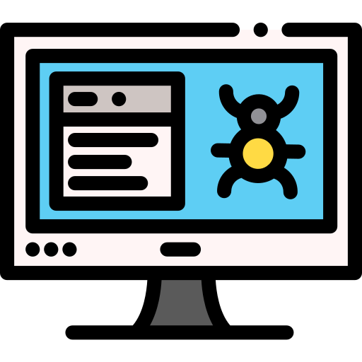
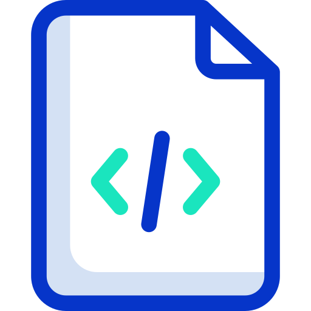

Compiler Courses
Compilers are like translators. They take lines of code written in one programming language and translate them to another. This allows for efficient optimization, often translating from a high-level language to a low-level language for an executable program. The MOOC platform offers students the opportunity to explore topics such as compilers through online courses created by experts in the field of computer science. Many courses are free for personal development, but students may also choose to pursue official credit, certification, and even degrees for a fee.

Compilers: Theory and Practice
The objective of this course is to learn the theory and practice behind building automatic translators (compilers) for higher level programming languages and to engineer and build key phases of a compiler in Java or C++ for a small
language.
- Intro
- Parsers
- ASTs
Discounted price:€351

For the full program experience

Compilers
This self-paced course will discuss the major ideas used today in the implementation of programming language compilers, including lexical analysis, parsing, syntax-directed translation, abstract syntax trees, types and type checking,
intermediate languages, dataflow analysis, program optimization, code generation, and runtime [
- Abstract syntax tree
- Types
- Code Generation
Discounted price:€2512
For the full program experience

The Life of Binaries
The Life of Binaries
Why use containers with your .NET Core applications? When you write an application, you have to consider the application code, frameworks, packages, and the underlying operating system itself.
- Scanning and tokenizing source code.
- Parsing a grammar
- Linking object files together
Discounted price:€251
For the full program experience

CS1:
Compilers(Stanford Online)
CS1: Compilers (Stanford Online)
This course will discuss the major ideas used today in the implementation of programming language compilers, including lexical analysis, parsing, syntax-directed translation, abstract syntax trees, types and type checking, intermediate
languages, dataflow analysis, program optimization, code generation, and runtime systems
- Design
- Code
- Improve
Discounted price:€251
For the full program experience
Compiler Design and Implementation
This course is a study of the theory and practice required for the design and implementation of interpreters and compilers for programming languages. Coursework ranges from the abstract, such as categorization of grammars and languages,
to the concrete, such as specific algorithms used in compilers and practical performance issues.
- Lexical Analysis
- Error Detection
- Global Optimization
Discounted price:€551
For the full program experience
Info
Expert instruction

4 skill-building courses
6 months

3 - 5 hours per week
Self-paced